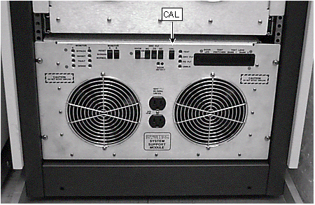

| NOTE: | This samples the open circuit fault detect signals, and adjusts the threshold accordingly for the Dynamic Disable Circuits: J42 (Body 1), J43 (Body 2), and J44 (Direct Drive). When the CAL Switch is pressed, the LEDs labeled TEST, DRV FLT, and PS FLT illuminate. This does not indicate a fault. |
Illustration 5: Location of SSM Cal Switch
